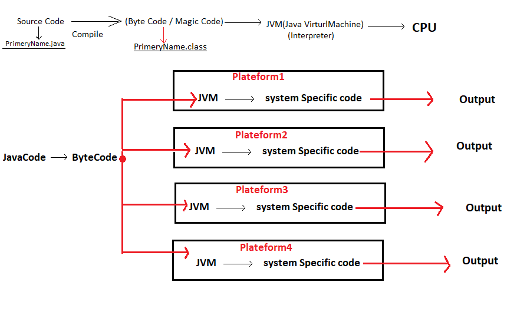

- What is Java?
Java is a high-level, class-based, object-oriented programming
language and computing platform first released by Sun Microsystems in 1995.
- History of Java:-
Java, originally named Oak, was developed as a part of the Green Project
at Sun Microsystems. It was started in December '90 by Patrick Naughton,
Mike Sheridan and James Gosling, their team leader James Gosling,
Whatever programming language existed before 1995 was platform dependent.
The Main Purpose of Creating the Oak Programming Language platform independence (WORA) Write
Once Run Anywhere . So James Gosling and his team
members created this programming language called Oak and cup, plate with the
vapor in the logo because there was a coffee plant called Oak outside
his office, but in 1994 the name of Oak was changed to Java. Because
the company named Oak was already registered. Java was later bought by
Oracle.
- Java Versions
JDK 1.0- Java Devrlopment Kit 1.0
The First version was released on
january 23, 1996. The first stable version, JDK 1.0.2, is
called Java 1.
JDK 1.1
Major additions in the release on February 19,1997 included:
-
an extensive retooling of the AWT event model
- inner classes added to the language
- JavaBeans
- JDBC
- RMI
- reflection which supported Introspection only, no modification at
runtime was possible. (The ability to modify objects reflectively
was added in J2SE 1.2, by introducing the AccessibleObject class
and its subclasses such as the Field class.)
- JIT (Just In Time) compiler on Microsoft Windows platforms, produced
for JavaSoft by Symantec
- Internationalization and Unicode support originating from Taligent
- Java Edition:-
Each Edition of Java has different Capabilities.
There are three Edition.
-
Java Standard Edition (JSE (Core Java)):-
Java Standard Edition is a computing platform for desktop and server environments. Java SE was
formely known as Java 2 platform, Standard Edition(J2SE).
Java SE-< First Version.
Java 2SE-< Older version.
-
Java Enterprise Edition(JEE)(Advance Java):-
The Java EE stands for Java Enterprise Edition which was earllier known as Jakarta
EE It is a set of (standard Edition). The Java EE provides a platform for developers with
enterprise features such as distributed computing and web services.
-
Java Mobile/Micro Edition(JME):-
Java Mobile/Micro Edition(JME) provides a robust flexible environment for applications
running on embedded and mobile devices in the internet of things: micro controllers, sensors, gateway,
mobile phones, personal digital assistants(PDAs), TV set-top boxes, printers and more.
- Java Principles
- It must be simple object-oriented and familiar.
- It must be robust and secure.
- It must be architecture-neutral and portable.
- It must be executable with high performance.
- It must be interpreted, threaded and dynamic.
-
JVM (Java Virtual Machine):-
Every system has its own JVM which gets installed automatically when
the jdk software is installed. Java is a platform independent language
while the JVM is plateform dependent.
JVM acts as a run-time engine to run Java applications JVM is the
one that actually calls the JVM is the one that actually calls the
main method presrnt in a Java code.
JVM is a part of JRE(Java Runtime Envorment)
Java applications are called WORA. This means a programmer can develop
Java code on one system and can expect it to run on any other Java
enabled system without any adjustment. This is all possible because of
JVM.
When we compile a .java file, .class files(contains byte-code) with the
same class names present in .java file are generated by je Java compiler.
this .class file goes into various steps when we run iy. these steps
together describe the whole JVM.
JVM
